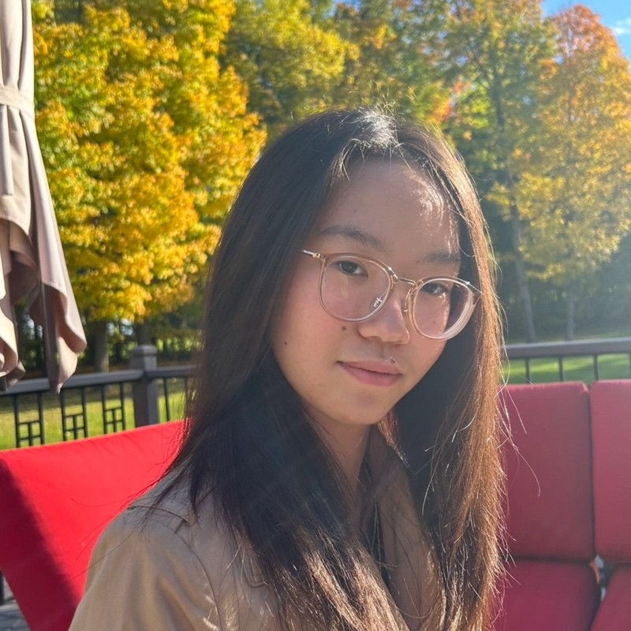

Hi, I'm Sandy! 
Welcome to my personal website. I'm currently a Grade 12 student at West Carleton Secondary School. Take a look around to find my digital resume and check out some of the projects I've worked on. You can easily access everything using the navigation bar at the top of the page.